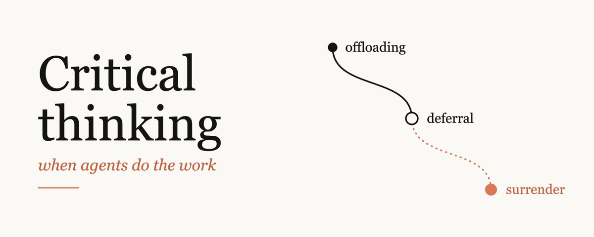
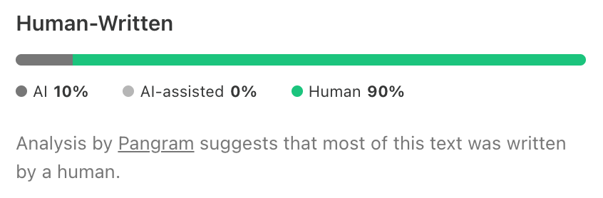

以前教批判性思维，是用谦卑的好奇心加一点健康的怀疑去碰新信息：听不同看法，形成自己的判断。这仍然对。可越来越多地，我日常里没什么会逼我批判地想——因为大量工作已经经 agent 跑过了。对已经完全买进 agent 工作流的工程师和产品人（并行开许多会话，并预期模型会变好），我想说：我很喜欢这些工具。我写这篇，不是主张少用 agent 工作流。
我的目标是帮你在一个很容易把任何事卸给 agent 的世界里，把批判性思维保住。
过去，大部分认知和审美处理发生在问题和答案之间的空隙里。那段空隙现在以秒计。你越用 agent 工作流，这件事越难（但不是我想人们预期的那种难）：模型变好，一眼能看出的错变少。许多（大多数？）输出写得好看、大体正确，却不要求你再看一眼。
即便你一次跑许多 agent，盯输出的眼睛还是只有一双。
你得自己把批判性思维嵌进一天，因为默认没有谁会替你做。
这件事难自我纠正，一部分是因为 agent 工作流很舒服。一天忙着，拿到又快、又顺、常常对的答案，让人松口气；也正因为这样，警惕容易松。
1卸载、推迟、投降
跟人聊这件事时，我把它说成一条谱：

最上：认知卸载，把任务委托给 AI，但结果的所有权仍在你。我整天这么做。你也该这么做。中间：推迟，工具的输出变成你的新输入；结果不再是一条假设。最下：认知投降——AI 的输出悄悄变成你自己的，你觉得不必核。
认知投降这个词是沃顿的 Steven Shaw 和 Gideon Nave 造的。它正好套上我看见的：信任（或懒）上去，人就往谱的下端漂。过渡很少被看见，因为每一步都渐变、看起来都合理。上一份答案你读得很认真，下一份就扫一眼。再下一份只扫骨架。然后有人问你某一行，你解释不了，连带着 agent 也解释不了。
那就是认知投降。认知债就是这样积的。通常发现它的时候，是你想套一套系统的心智模型，发现那套模型不存在。Margaret-Anne Storey 写过这在团队里长什么样：对共享系统理论的理解在蚀。我写过代码这边的对应物，理解债（Jeremy Twei 造的词）。当场完全看不见。代码库看起来干净，测试也过。要改系统时才明显：发现谁也不再懂它。你只读了策略文档或规格的目录就签字，也是同一回事。
说清楚：我不是主张做不可能的事。把大型现代代码库的完整心智模型一直握在手里，做不到。Claude Code 团队公开说过，他们按需重建理解：需要懂某一块时，让 Claude 解释那一块，而不是把整套模型放在脑子里。我以前写过，这种债比多数工程师以为的更好收回。你不必维持完整模型，只要能在需要时局部重建。你只需要知道自己缺什么。
利害低的地方，完全可以委托。一个问题的答案你解释不了，即便带着 agent 也解释不了，所有权就已经让出去了。
这也不总是问题。就在不久前，我录一门课，要从三家评分差不多的酒店里选一家当录制地点。我没时间逐条翻评论，就把决定委托给 AI。成了，我还会再这么做。可我不会在决定怎么投我们的钱、怎么给孩子职业建议、或在工作上这么做：该建什么、改动碰到哪些用户、能不能安全发出去。错了便宜的地方把交接交出去；别人得承担后果的地方，把推理留下来。
2我问自己的问题
我不知道自己怎么想的时候，通常会回到这样一份基本清单：我怎么知道自己在做对的问题？我怎么知道自己在用对的办法解？有没有证据撑我的结论？我怎么知道做完了？多数时候，这就是谁、什么、哪里、为什么、何时、怎样。写出来显得幼稚得可笑，可它逼你按否则会忽略的类别去想。现在太容易跳过这一切，直接问 agent 它觉得你该做什么。下面是这些提问现在的版本，我问自己的。
问之前我有没有形成一条假设？任何非琐碎任务，跑 agent 之前，我会写下——哪怕只在脑子里——我觉得答案可能是什么。猜得差也行。有了新信息，随时可以改主意。可一旦读过一份写得好的回答，就很难再想象别的可能。如果你完全没有指引，去要 Thariq Shihipar 说的 盲点一遍：把你知道的给模型，让它找你不知道自己不知道的。
我是在请它帮我想，还是把想从我身上卸掉？两种都行，只要你知道自己在做哪一种。
要让这个是错的，什么必须为真？然后去查。模型对自己的置信评估，远不如你能做的一次实际测试值钱，所以给它一次。
我有没有从另一个角度听过反方？我对一件还算开放的事站得很硬时，会让不止一个模型去辩对面，再读输出、形成自己的判断。这更花时间，可我对这件事知道得更多。
我会不会当着必须维护它的人，为这个下注？这适用于代码，也适用于你交付的任何东西。我认为这是可被问责的门槛。
我不再练什么了？也许是一些例行调试。其中一些我可以放手，但我想这是故意的。
3把核验做成习惯
最近我写了很多核验，因为我认为瓶颈已经从写代码挪到确定你是对的。你给 agent 核验自己在做什么的办法——端到端测试、性质测试、或真实的应用交互——它可以改一处、跑核验、读输出、再试，而你还什么都没看。这就是 Boris Cherny 说的「给 Claude 一个核验自己工作的办法」，我认为这是拿到好结果最要紧的一块。你去建这些循环、审证据，不去读每一行。
你也可以把核验交出去。「有没有证据撑我的结论？」变成「检查变绿了吗？」Agent 让造测试便宜到你会看见很多绿，而一次通过的测试可能抓不到一个坏掉的功能。测试和功能带着同一个错写出来，它会过。一次绿灯只传达一个属性。太容易想象它盖住了一切。
检查变绿时，问它证明了什么。再问它没证明什么。
事先定义「核过」，因为事后你会合理化任何结果。
Agent 活的终点线该是能摸到的东西：一次测试通过、一张截图、一份日志或轨迹。这样，做完的标准是事实，而不是按「看起来做完了」去解释（以及投降）。Agent 发来做完通知时，先看执行的命令片段和它的输出，再看摘要。
Claude Code 也能自我批评（经一个新上下文里的子代理）自己的活，当作一次健全检查。值得把它烤进循环，每次都跑，而不是你想起来才跑。结尾我仍会问「我漏了什么吗？」听起来傻，可常常，我用前沿模型做完一块复杂功能、看过、审过，再问「我漏了什么吗？」它会再回来两三项。所以我总问。
当然，这些不必成为常态；知道何时往深走是一项技能。我最喜欢的一条经验来自 Claude Code 团队怎样做代码评审的那篇：「你说不出这些检查会漏什么，就去要一次真审，不要快速批准。」
这也不止于代码。Agent 替你合成了五十通客户电话，或一份竞品分析，去核几份源文档，确认摘要准不准。去核你的建议所依赖的一个数字，确认它算得对不对。
Agent 让核验变得便宜好搭。对你难的是：知道好的核验长什么样。
4真去看生成出来的东西
比方 agent 给你一份 600 行的拉取请求。你大致看结构。你不读每一行。变量名看起来合理，测试过了，于是你批准。可中间某处，事务边界上有一处细微的顺序变化，或一个你从没想过的边沿上默认值翻了。你算是审过了，但只审了你本来就知道会找到的东西。
写代码和审代码是不同的技能，有一个点，审会变成盖章。所以把 diff 当成不是 AI 写的来读，然后越过 diff 去看 agent 决定了什么。一次长会话里，它替你做许多小决定：默认值、什么在范围外、两条要求打架时它重新解释了哪一条。
说一切顺利的摘要里你看不见这些，所以让它列出它做的决定和假设。然后考自己。随机挑几行问：这一行呢？那一行呢？对一份文档，合上它，试着凭记忆写出主论点。有人给长会话一个我喜欢的习惯：让 Claude 写一份关于这次改动的报告，底部给你一份测验，规则是「我测验全过才合并」。
对你发出去的东西，懂到能替它辩护。因为某个时候，会有人问。
Agent 也能护你的注意力。比如我有一个开源项目，拉取请求很多。我会用 agent 帮我判断进来的是什么、什么和我们的指南相反、我的注意力大概该去哪。我很少让 agent 自己定这个，可它们能把范围收到我该盯的地方，然后我可以真去想：这些改动是不是在用对的办法解对的问题。
然后是量，你得对自己诚实。我把这叫编排税。它是 agent 生成的东西，和你愿意署上自己名字的东西之间的缝。做完的活堆得比你过得完更快，再开一次会话帮不上，直到你修了这件事：把检查收紧，让更少的活需要你；或者放慢。
你产出的比你能站住的更多时，你已经不是在审。你在赌。
5进去什么，出来什么
人的心智模型仍在，但不在中间，而在头尾。你把力气放在任务描述和上下文的前端，以及审输出的后端。所以好输入对输出质量这么要紧，我也把写好提示看成一项批判性思维技能。
过去，你提一个不具体的请求，会有人顶回来，你可能意识到：「哦等等，这事我还没想清楚。」Agent 常常不会在那里拦住你。它把你留下的空填上，交回一份看起来做完的东西，尽管背后的想法仍模糊。我把这写成意图债：你没写的产物里可能存在的隐含目标、约束和理由。和其他债不同，这件事没别人能替你修。意图必须来自你。
你的提示映出你对问题的理解。你表达不清楚，它在你自己脑子里可能也不清楚。
求帮助之前，用自己的话写一份请求简报。写清读者、范围外的项、以及做完的定义。第二轮纠正还没把你带到那里，就停微调，重写提示。
你也可以让 agent 帮你做这个。我喜欢 Andy Clark 对「委托给一套 AI 系统」和「与它协作」的区分。后者里，你在一个互相放大的良性循环：提示磨利输出，磨利下一条提示，磨利你对问题的心智模型。不清楚，就让 agent 就它不懂的事采访你。关会话时你自己的心智模型更清楚了，那就是成功的信号。
输入也要小心。太容易让每个 agent 只把上一个 agent 的摘要塞进上下文，不久第三个 agent 没读过原始文档。
输出你也得有自己的标准。我在许多不同的创作媒介里玩过 AI，大多数从未拿出来，因为达不到我的标准。东西都出来得格式好看、口气自信，所以光洁不再是有用的信号。
AI 可能让生产更快，可如果我不愿意把输出归到自己名下，我就不会把它发出去。
有东西达不到你的标准，把为什么记进共享配置、钩子或测试，免得再发生。品味就是这样叠上去的，记下为什么没过关本身也是好练习。
6「模型会比我更会这个」
如果你对这块的未来像我周围许多人一样看多，前面几节你大概已经有这个念头。一两年间，模型将能检出我能检出的东西，那我为什么还要维持这项技能？
检出这件事上你可能对很多。我自己也一直主张把检出越来越多地推给 agent。可我仍觉得它要紧，原因是：一天结束时，有人对发出去的东西负责。无论 AI 帮了多少，人必须承担责任。
对任何给定任务，该信 agent 多少，本身就是一次判断。校准自己的一部分是审活，因为模型会错什么一直在变。Anthropic 对自己工程师和研究者的研究把这个陷阱叫监督悖论：「监督 Claude 需要的，正是可能因过度使用 AI 而萎缩的那些编码技能。」
这些是对我最要紧、更好的模型也解不了的事：你在建什么，为什么值得，碰到谁，你愿意牺牲什么？这些问题你需要回答。Agent 可以帮你过一遍，我也希望它帮，可它们最终仍是你的。
你可以卸掉活，也可以卸掉很大一块审计，卸不掉问责。
7日常做法
你不必把这些都做得很严。把适合你工作流的插进去就行。
一周一次，不带 agent 写一点代码，或做一件如果你忘了怎么做就会很糟的真事。（我把这叫校准练习，但不是道德练习。）一个月一次，写下你停了什么，并决定其中哪些你可以不再做。我旧博文里的一个问题仍然有效：如果 AI 不存在，你会迷到什么程度？
有东西在你理解之上，就去学。我写作时碰到没见过的短语，可以谷歌一行解释再塞进去。我更愿意稍作研究，把它弄懂，好看见它安在哪。
把机器核到位是真活，假装不是，团队最后就不会做。它不是免费的，所以把它当成一项日程，你才会真做完。
你停练的技能会走掉，大概比你猜的更快。留下你不愿意放手的那些。
8带走什么
要故意。Agent 可以考你、采访你、给你看证据，但只有你把这些搭起来。所以搭起来。
对自己在谱上的位置诚实。答案你解释不了，即便带着 agent 也解释不了，你已经把它交出去了。
有一条假设。问之前形成一条，哪怕差。
绿灯只表示一件事。它核了什么？它没核什么？
找证据。先读它跑了什么、返回了什么，再读摘要。
读，好知道它做了哪些决定。它替你决定了什么？
写你的提示。你怎么写提示，显出你对问题懂了多少。
设一条门槛，守住。你不愿意署上名字的，就不出去。
亲手用那些你不愿放手的技能，让自己留在局里。你可以做一件：问之前写下你觉得会发生什么；agent 做完之后，写下它没核的一件事。告诉我这有没有改你读输出的方式。独立地想。问更好的问题。对结果负责。
9出处
这篇是译文。原文 Addy Osmani，Critical thinking when agents do the work，X 长文，2026-11-03。封面和谱图来自原文。
认知投降来自 Shaw 与 Nave（SSRN 6097646）。理解债来自 Jeremy Twei，经 Osmani 的博文。监督悖论来自 Anthropic 对自己工程师的研究，Osmani 转述。酒店选址、开源拉取请求、600 行 PR，都是原文里的个人例子。我没有核过那些链接里的每一篇。